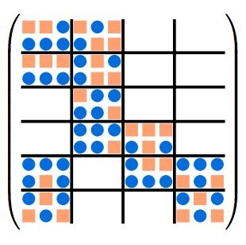
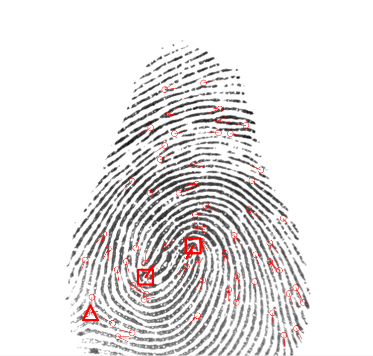
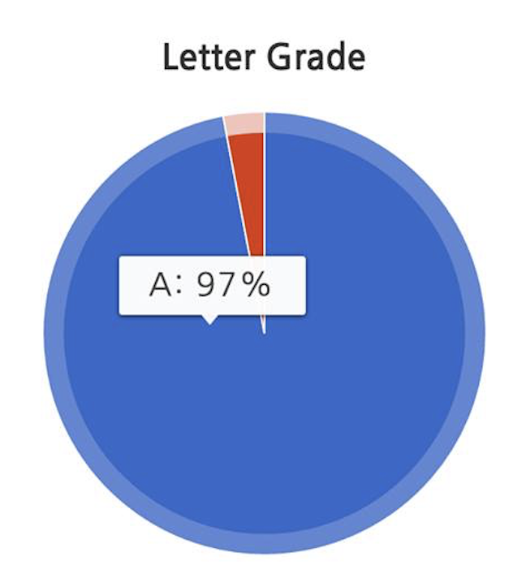
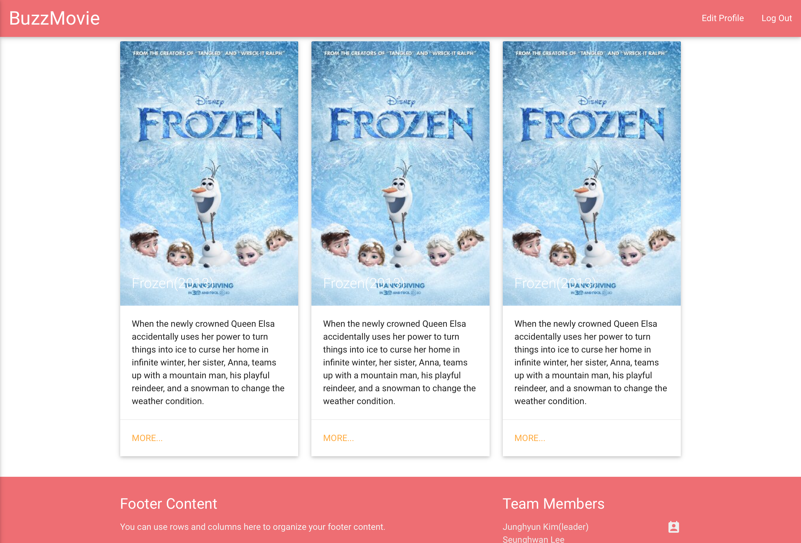

Projects
-

PHIL algorithm (Peter Ahrens, et al, 2018) estimates the
Fillof the given tensor inCSFformat given the range of block sizes.The
Fillof the tensor is considered to be correlated with best block size for MTTKRP algorithm (Richard Vuduc, et al, 2005). The matrix case is shown by Dr. Richard Vuduc. We will use PHIL algoritm to find the relationship between theFilland the best block size for finding best block size for MTTKRP algorithm forHiCOOFormat.I have tested the implementation of PHIL algorithm on CSR formatted matrix by Peter Ahren, implemented the algorithm for
COOformatted tensors, and extended matrix case algorithm to the 3rd order tensor case. -

We present a privacy preserving fingerprint authentication protocol based on minutiae points which is the most accurate and promising fingerprint matching algorithm. Our protocol provides a secure alignment and matching protocol in two-party settings between a user and a service provider using inner product encryption. We devise a new encodings to compute alignment parameters consists of shift and rotation information for minutiae points. This allows the user to align fingerprint before encrypting fingerprint sample. This extremely reduces the computation overhead from O(n3) to O(n2), where n is the number of minutiae points in the fingerprint. We also propose a method to compute Euclidean distance of two vectors using inner product encryption without leaking any information of two vectors themselves. This further reduces the computation overhead about 25% as well.
The implementation results over desktop takes less than 1 second in authenticating one person which shows practicality of our protocol. This results achieve at least 60 times faster than previous 2-party setting of Bayatbabolghani et al.'s recent work which exploits Garbled circuit.
-

Honeycomb Critique is a web-based system that visualizes all statistics on all classes' and instructor's grade distributions at Georgia Tech to give students an idea of how a class or an instructor is easy or hard. Students can see grade distribution of a course, an instructor, and an instructor course pair so that they can measure the difficulty of the course more accurately.
-
IT Factory COIN is an online judge (program autograder) and programming assignment management system for
KDMH.In this system, instructors can assign programming assignments to students, and students can submit solution until the deadline specified by the instructor. The instructor is able to see statistics on students' submission.
IT Factory COIN has been used for assignments (C Programming) for the entire pre-freshmen since 2015(every year). Now it's used as an official online judge for C programming course at
KDMH.Website: https://algorithm.dimigo.hs.kr
-

BuzzMovie is a movie recommendation system for Georgia Tech students. We used The Open Movie Database to fetch movie information and using that information offered a service in which users can get a recommendation from other users or recommend a film to others.
-

WithStudy is a study management app in which students can schedule independent study time and manage study plans and extracurricular activities plans.
One of our difference from another scheduling app is we have a bunch of textbook data in our database and students can utilize this data, enabling them to set study goal more efficiently.
For example, if a student uses WithStudy scheduling app and he or she is going to study SAT Practice Exam book practice No.1, he or she can mark practice No.1 part completed and kept track of overall progress on this book.
We submitted this app to SK Teen App Challenge and received honorable mention for being placed on within 20 places out of 400 teams.